Six-Trak
The Six-Trak features two operational modes: Polyphonic Mode and Unison Mode. In Unison mode, with all six oscillators, this baby gets fat, rich, creamy and wild making it an excellent stand-in for Moog-like sounds. Also, the Six-Trak is capable of interesting and complex sound effects, mostly thanks to useful cross modulation and the six oscillators. It also includes a simple 6-channel on-board sequencer (of little usefulness these days).
- Manufacturer: Sequential Circuits
- Synthesis: Analog Subtractive
- Date: 1984-1987
{kind=link}
{kind=link}
{kind=link}
{kind=link}
{kind=link}
{kind=link}
{kind=link}
{kind=link}
{kind=link}
{kind=link}
![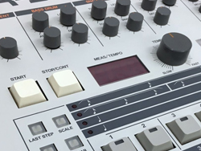 TR-909 Rhythm Composer It was the first Roland drum machine to use samples (for its cymbal and hi-hat sounds) alongside analog sounds.[2] Designed by Tadao Kikumoto, who also designed the Roland TB-303 synthesizer,[3] the 909 features a 16-step step sequencer and drum sounds that aimed for realism and cost-effectiveness. Manufacturer: Roland Synthesis: Analog/dig smpl Subtractive Dates: 1983–1985](img1/original/16.jpg){kind=link}
{kind=link}
![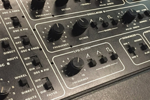 Pro-One The Sequential Pro One is a wicked little monosynth! It comes from the same period and genre as the Roland SH-101 and Moog Prodigy. The Pro One was basically Sequential's attempt at taking their legendary Prophet 5 poly-synth and packing it into a compact, inexpensive, monophonic analog synth! It has two VCOs, a great 4-pole lowpass filter, two ADSR envelopes (one for filter), and a compact three-octave keyboard. Manufacturer: Sequential Circuits Synthesis: Analog Subtractive Date: 1981-1984](img1/original/18.jpg){kind=link}
{kind=link}
![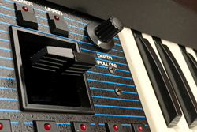 OB-Xa The OB-Xa was available in four, six or eight voice polyphonic models. They all featured patch memories, also in varying degrees. A minimum of 32 patches were available on early models (4 banks of 8). The maximum amount of patch memory storage found on many OB-Xa's is 120 patch memories. All models of OB-Xa, however, featured the new Curtis chips which offered great stability for an analog synth and they are attributed to its great filters and sounds. Manufacturer: Oberheim Synthesis: Analog Subtractive Date: 1981-1987](img1/original/20.jpg){kind=link}
{kind=link}
![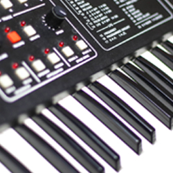 Six-Trak The Six-Trak features two operational modes: Polyphonic Mode and Unison Mode. In Unison mode, with all six oscillators, this baby gets fat, rich, creamy and wild making it an excellent stand-in for Moog-like sounds. Also, the Six-Trak is capable of interesting and complex sound effects, mostly thanks to useful cross modulation and the six oscillators. It also includes a simple 6-channel on-board sequencer (of little usefulness these days). Manufacturer: Sequential Circuits Synthesis: Analog Subtractive Date: 1984-1987](img1/original/22.jpg){kind=link}
![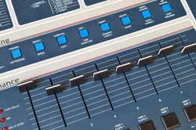 SP-12 The E-mu SP-12 is the classic drum machine & sampler combo that paved the way for such greats as the E-mu SP-1200 and AKAI MPC series of sampling drum machines. Redesigned from E-mu's original Drumulator drum machine, the SP-12 is a classic drum machine with built in sampling capability. There is a set of preset drum sounds including kick, snare, hihats, toms, cymbals, handclap and rimshot. These sounds can be mixed and edited using the sliders. Then you can add your own beats and drum sounds using the built-in 12-bit sampler. Manufacturer: E-mu Memory: 8 user Control: MIDI, SMPTE Polyphony: 8 voice](img1/original/23.jpg){kind=link}
![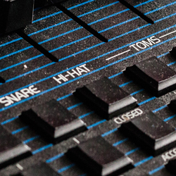 DX The DX was a lighter version of the classic DMX drum machine. In fact its look, features and programming method are basically the same as the DMX. The DX has individual tuning knobs for the drum tones and an external trigger input. Its sounds are sampled recordings of actual instruments. The DX only has 18 drum sounds and the DMX has 24. Both drum machines have a number of human like feel effects such as a great swing function, rolls, flams and other weird time signatures and grooves. Best of all it's easy to operate. Manufacturer: Oberheim Polyphony: 6 voices Drum Sounds: 18 sounds Sequencer: 100 sequences Date: 1982](img1/original/24.jpg){kind=link}
![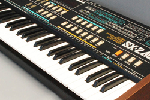 SX-240 The SX-240 is an eight voice, fully programmable polyphonic analog synthesizer released in 1984 as a follow up to the Kawai SX-210. It was manufactured by Kawai but originally released under the Teisco brand-name in Japan when Kawai bought out Teisco. The Kawai SX-240 and the Kawai SX-210 never got much attention due to entering the market during the time of the digital revolution and poor marketing. Its main analog competitors of the time were the Korg Polysix and the Roland Juno 6/60. Manufacturer: Kawai/Teisco Polyphony: 8 voices Sequencer: 1,500 note max Date: 1984](img1/original/25.jpg){kind=link}
![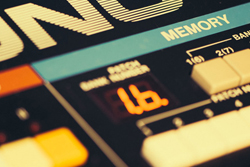 Juno 60 Among the first of Rolands Juno Series. Six analog voices of polyphony and patch memory storage!! The Juno-60 sounds great, however, like the Juno-6 it lacks MIDI control. The Juno-60 includes 56 patches of memory storage. The Juno-60 is still popular due in part to opinions that it sounds better (punchier) than the Juno-106. The Juno-6 and 60 are very rich sounding synthesizers and are great analog machines as long as you can withstand the absence of MIDI control. Manufacturer: Roland Polyphony: 6 voices Oscillators: DCO: pulse, saw, and square Date: 1982](img1/original/26.jpg){kind=link}
![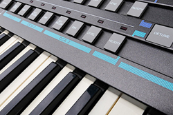 CZ-1 TThe CZ-1 competes with the CZ-5000 for the best all around Phase Distortion digital synth. The CZ-1 has the most advanced keyboard of all the CZ series synths. It has a full 61-note 5-octave keyboard with velocity and aftertouch sensitivity. Very professional features from a Casio synth! Otherwise it is essentially a CZ-3000 (which is essentially two CZ-1000s or CZ-101s). With the CZ-1 you get 8-stage envelopes, 2 oscillators per voice and a whole lot more with relatively easy programming. Whereas the CZ-5000 may not have had as good a keyboard, it had the benefit of an on-board 8-track real-time sequencer which the CZ-1 lacked. Manufacturer: Casio Polyphony: 16 voices Arpeg/Seq: None Filter - None Date: 1986](img1/original/27.jpg){kind=link}
{kind=link}
![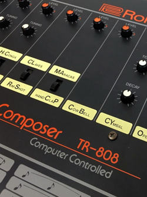 TR-808 Rhythm Composer The TR-808 is a classic drum machine that uses analog synthesis to create its sounds. The sounds have a very pure quality and are closer to the sound of the CR-series of Roland drum machines, as opposed to its popular successor, the TR-909. The TR-808 has become the signature beatbox used in most R&B and hip-hop as well as a lot of dance and techno music. Booming bass kicks, crispy snares and a distinctive cowbell sound made famous in the 1980's are all part of the 808 and its famous sound. Manufacturer: Roland Synthesis type: Analog subtractive Dates: 1980–1983](img1/original/2.jpg){kind=link}
![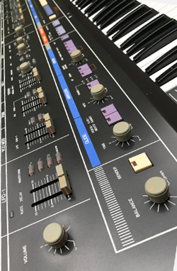 Jupiter 6 The Jupiter-6 is an incredible analog synth. All of the Jupiters have a sound that was unlike any other synthesizer and the Jup 6 is no exception. This sound is due in part to classic analog Roland technology in its filters, modulation capabilities and a thick cluster of 12 analog oscillators at 2 per voice. Easy and intuitive programming via front panel sliders, knobs and buttons for all your tweaking needs. Manufacturer: Roland Corporation Polyphony: 6 voices Arpeg/Seq: 1 Arpeggiator Date Produced: 1983](img1/original/3.jpg){kind=link}
![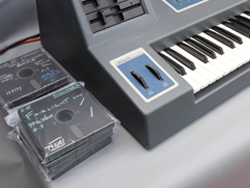 E-mu Emulator II An affordable classic early eighties sampler/workstation synthesizer. It's a sampler that sounds like an analog synth because it has analog filters! It samples at a low 8-bits (up to 17.6 seconds) so it's got that lo-fi sound which is great for some types of electronic music. Especially nice is its ability to create warm analog-ish pads and sounds. It uses those giant 5" floppy disks for storage. Also on-board is a useful 8-track sequencer. Polyphony: 8 voices Sampler: 27kHz; 8-bits; 512 KB to 1 MB storage Sequencer: 8-Track Date: 1984](img1/original/4.jpg){kind=link}
![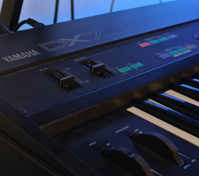 DX7 One of the most popular digital synths ever was the DX7 from Yamaha, released in 1983. It featured a whole new type of synthesis called FM (Frequency Modulation). It certainly is not analog and it is difficult to program but can result in some excellent sounds! It is difficult because it is non-analog and thus, a whole new set of parameters are available for tweaking, many of which seemed counter-intuitive and unfamiliar. And programming had to be accomplished via membrane buttons, one data slider and a small LCD screen. Manufacturer: Yamaha Polyphony: 16 Voices Oscillators: 16 bit Digital 6 operator FM. Memory: 32 Patches Dates: 1983-1987](img1/original/5.jpg){kind=link}